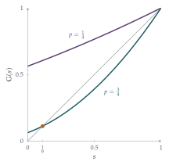

STEP II 2003, Question 12
Read the question before you go on. It is in the STEP Support Programme’s question database: step.maths.org/questions/03-s2-q12
The hook
In 1873 Francis Galton posed a question in the Educational Times: why do aristocratic family names die out so often? Each man has some random number of sons, each of whom passes on the name. Even if each man has on average more than one son, will the name survive for ever? The question founded the theory of branching processes, which now models nuclear chain reactions, the spread of epidemics, the growth of cell populations and the survival of mutations.
This question sets up the simplest model: each particle splits into \(0\), \(1\) or \(2\) particles. The expected population grows or shrinks geometrically. But expectation is not the whole story. Even when the expected population explodes, there is a positive chance that the line dies out completely, and a beautiful fixed-point argument finds it.
Before you start
If there are two particles at one stage, what is the distribution of the number at the next stage?
Each of the two particles independently produces a \(\mathrm{B}(2, p)\) number of offspring, so the total is \(\mathrm{B}(4, p)\): four independent “chances” each succeeding with probability \(p\).
Working it through
Stage 1 Two, then two
\(\mathrm{P}(X_1 = 2) = p^2\), and then \(\mathrm{P}(X_2 = 2 \mid X_1 = 2) = \binom42p^2q^2 = 6p^2q^2\). So \[\mathrm{P}(X_1 = 2, X_2 = 2) = 6p^4q^2. \qed\]
Stage 2 Reasoning backwards
In how many ways can \(X_2 = 2\) happen? (What can \(X_1\) be?)
\(X_2 = 2\) needs \(X_1 = 1\) (probability \(2pq\)) followed by \(2\) offspring (\(p^2\)), or \(X_1 = 2\) followed by \(2\) from \(\mathrm{B}(4, p)\). (\(X_1 = 0\) leaves nothing.) So \(\mathrm{P}(X_2 = 2) = 2p^3q + 6p^4q^2\), and \[\mathrm{P}(X_1 = 2 \mid X_2 = 2) = \frac{6p^4q^2}{2p^3q + 6p^4q^2} = \frac{3pq}{1 + 3pq}.\] Setting this equal to \(\frac{9}{25}\): \(75pq = 9 + 27pq\), so \(pq = \frac{3}{16}\), that is \(p(1 - p) = \frac{3}{16}\), giving \(p = \frac14\) or \(p = \frac34\).■
Stage 3 The expected population
If there are \(k\) particles at stage \(n - 1\), what is the expected number at stage \(n\)? Then average over \(k\).
Each particle has on average \(\mathrm{E}(X) = 2p\) offspring, so \(k\) particles have \(2pk\) on average: \(\mathrm{E}(X_n \mid X_{n-1} = k) = 2pk\). Averaging over \(k\), \(\mathrm{E}(X_n) = 2p\,\mathrm{E}(X_{n-1})\). With \(\mathrm{E}(X_0) = 1\), \[\mathrm{E}(X_n) = (2p)^n.\] For \(p = \frac14\), \((2p)^n = 2^{-n} \to 0\); for \(p = \frac34\), \((2p)^n = \bigl(\frac32\bigr)^n \to \infty\).■
Looking back
Sums of independent binomials. \(k\) particles each giving \(\mathrm{B}(2, p)\) give \(\mathrm{B}(2k, p)\) in total.
Bayes’ theorem in time. \(\mathrm{P}(X_1 = 2 \mid X_2 = 2)\) reasoned backwards from a later observation to an earlier state.
Conditional expectation. Conditioning on the previous generation turned the expectation into a geometric sequence.
What’s really going on
The probability of extinction
For \(p = \frac34\), the expected population grows without limit. Does that mean the population survives? Not necessarily: if the first particle has no offspring (probability \(q^2 = \frac{1}{16}\)), the line ends at once. Let \(e\) be the probability of eventual extinction. The first particle has \(k\) offspring, and each of their lines dies out independently with probability \(e\), so \[e = q^2 + 2pq\,e + p^2e^2 = (q + pe)^2 = \mathrm{G}(e),\] where \(\mathrm{G}(s) = (q + ps)^2\) is the probability generating function of the offspring number. The extinction probability is a fixed point of \(\mathrm{G}\): in fact the smallest non-negative one. For \(p = \frac34\), \((1 + 3e)^2 = 16e\) gives \(9e^2 - 10e + 1 = 0\), so \(e = \frac19\) or \(1\), and the extinction probability is \(\frac19\). For \(p = \frac14\), the only fixed point in \([0, 1]\) is \(e = 1\): extinction is certain (Figure 12.15.1).

The critical threshold
In general, a branching process dies out with certainty if the mean number of offspring is less than \(1\), and also if it equals \(1\), except in the trivial case where every individual has exactly one offspring (when the family line simply continues for ever, one at a time); it survives with positive probability if the mean is greater than \(1\). The mean offspring number is the reproduction number \(R\) of epidemiology: an epidemic with \(R > 1\) may take off, but even then an early outbreak can fizzle out by chance, with probability given by exactly the fixed-point equation above. In nuclear physics, a chain reaction is critical when each fission causes on average exactly one more, and the art of running a reactor is to keep it there.
Galton’s question was answered, partly incorrectly, by the Reverend Henry William Watson in 1874: he found the fixed-point equation but concluded that every family name dies out eventually, missing the second root. The correct analysis had in fact been given in 1845 by the French statistician Irénée-Jules Bienaymé, whose work was forgotten until the 1970s. The model is now called the Galton–Watson process (sometimes Bienaymé–Galton–Watson), and is a central example in every course on random processes.
The thinking skill
A process that renews itself (each offspring starts an independent copy of the whole process) satisfies an equation obtained by conditioning on the first step.
The equation \(e = \mathrm{G}(e)\) is a fixed-point problem, the same kind met in Section 2.2 and Section 8.7. At university, generating functions and fixed points are the main tools for branching processes, random trees and random networks.
Try this next
Extinction in general. For offspring distribution \(\mathrm{B}(2, p)\), show that the extinction probability is \(1\) if \(p \leq \frac12\) and \(\bigl(\frac qp\bigr)^2\) if \(p > \frac12\).
The variance. Show that \(\mathrm{Var}(X_n)\) satisfies \(\mathrm{Var}(X_n) = (2p)^2\mathrm{Var}(X_{n-1}) + 2pq\,\mathrm{E}(X_{n-1})\), and find it for \(p = \frac12\).
Extinction by generation \(n\). Let \(e_n = \mathrm{P}(X_n = 0)\). Show that \(e_n = \mathrm{G}(e_{n-1})\), and compute \(e_1\), \(e_2\), \(e_3\) for \(p = \frac34\). Do they approach \(\frac19\)?
Surnames. If each man has \(0\), \(1\), \(2\) or \(3\) sons with probabilities \(\frac14\) each, what is the probability that his surname eventually dies out?
Further reading
Geoffrey Grimmett & David Stirzaker, Probability and Random Processes (Oxford University Press), the section on branching processes.
Adam Kucharski, The Rules of Contagion (Profile). Reproduction numbers and outbreaks, for a general reader.
David Kendall, “Branching processes since 1873”, Journal of the London Mathematical Society 41 (1966). The history, including Bienaymé.